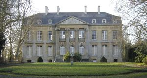
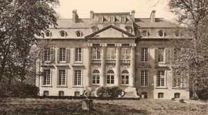
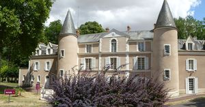

Recensement Jean-Claude Truffet
| Département | 14 — Calvados |
| Canton | Ouistreham |
| Commune | Bieville-Beuville |
| Type d'édifice | Château |
| Période d'origine | XVII |



Deux châteaux dans cet article Bieville et Beuville. BIEVILLE, ce fief est alors tenu par Jehan Cordhomme, écuyer. Il est acheté ou apporté en dot à Jacques 1er de Baillhache à la fin du XVIe siècle. Cest ce dernier, seigneur de Rubercy et dOutreval qui fait bâtir le manoir seigneurial, « sur une parcelle sise en la delle des dix acres, était assis le manoir seigneurial avec lun des colombiers, le tout clos de murailles et de doubles fossés» Lélégant pavillon de Baillehache, avec sa haute toiture pyramidale et ses cheminées élancées, borde le « chemin du Roi ». Le manoir demeure dans la famille jusquà son acquisition, en 1752, par Nicolas-François Le Coq, seigneur de Beuville. A sa mort en 1770, la terre de Biéville revient à son fils cadet qui commence la construction dun nouveau château près de lancien logis seigneurial dOutreval. Il décède en 1786 sans lavoir achevé. Cinq années plus tard, son fils, Le chevalier de Rubercy, vend tout le domaine de Biéville au comte de Sourdeval. Le château est toujours dans le même état et seuls les murs et la toiture sont terminés. Victime de la Terreur, le comte na pas le temps de parachever la construction. Sa veuve ny réalise que quelques travaux indispensables. Au début du XXe siècle, devenu une ferme avec des communs bâtis autour de la cour. Les propriétaires du château lont laissé dans létat où ils lont trouvé. La famille Vogt acquiert le domaine en 1917 et loccupe jusquà la seconde guerre mondiale où le château est réquisitionné par les troupes doccupation. Sinistré en 1944, il est restauré par ses propriétaires qui habitent le pavillon Bailllehache. Le parc est classé parmi les sites en juin 1987.
BEUVILLE, la seigneurie de Beuville demeura entre les mains de la famille éponyme jusqu'au milieu du XVIe siècle. Cette famille de chevaliers s'illustra sur les champs de bataille et contracta de belles alliances notamment avec la famille d'Harcourt. Le talentueux costumier David Belugou vient dacquérir le château de Biéville-Beuville au nord de Caen. Le rez-de-chaussée sera consacré à des ateliers darts et dexpositions. BIEVILLE, peu après lentrée sud du bourg, le château de Biéville est une superbe construction classique en pierre de taille, sur deux niveaux, coiffée dune toiture à la Mansart où des lucarnes à il de buf souvrent dans le brisis. Sur son avant corps central, quatre colonnes ioniques sélèvent pour supporter un fronton triangulaire inachevé. Au-dessus, le haut comble à la Mansart, à deux étages de lucarnes, na pas été reconstitué après-guerre et désormais la toiture ne présente plus quun volume unique. Au pied de lélégant perron en fer à cheval, sétend une pelouse au dessin classique ornée en son centre dune sculpture. La façade arrière, plus sobre, a conservé sa modénature dorigine. Un large perron central conduit à un avant-corps droit surmonté dun étage attique et dune terrasse à balustrade. Devant la façade, vers louest, il ne subsiste plus rien. Le pavillon Baillehache sélève en bordure de la route de Caen. Seul le dernier étage, couvert de vigne vierge, et la haute toiture émergent au-dessus du mur de clôture. Le corps dhabitation est composé du pavillon Renaissance suivi de trois corps de bâtiment qui semblent rangés par ordre de taille. A larrière, le bâtiment na guère changé et il a conservé ses ouvertures étroites surmontées déchauguettes.
Bieville, Nicolas-François Le Coq
"
Deux châteaux dans cet article Bieville et Beuville. Grav 3 Château de Bieville grav 1-2.